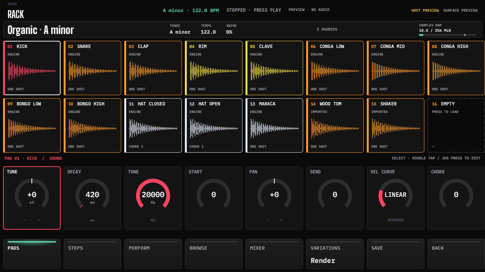
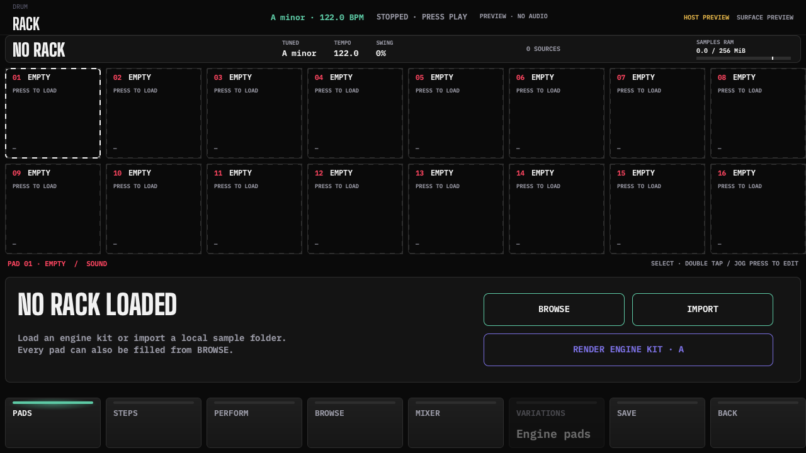
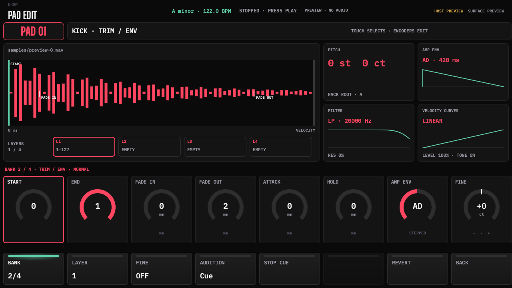
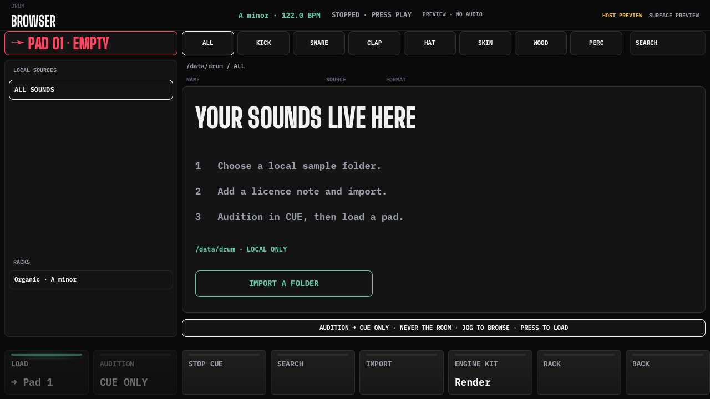
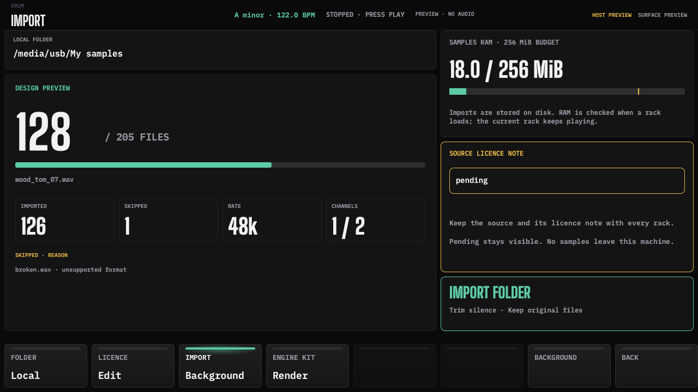
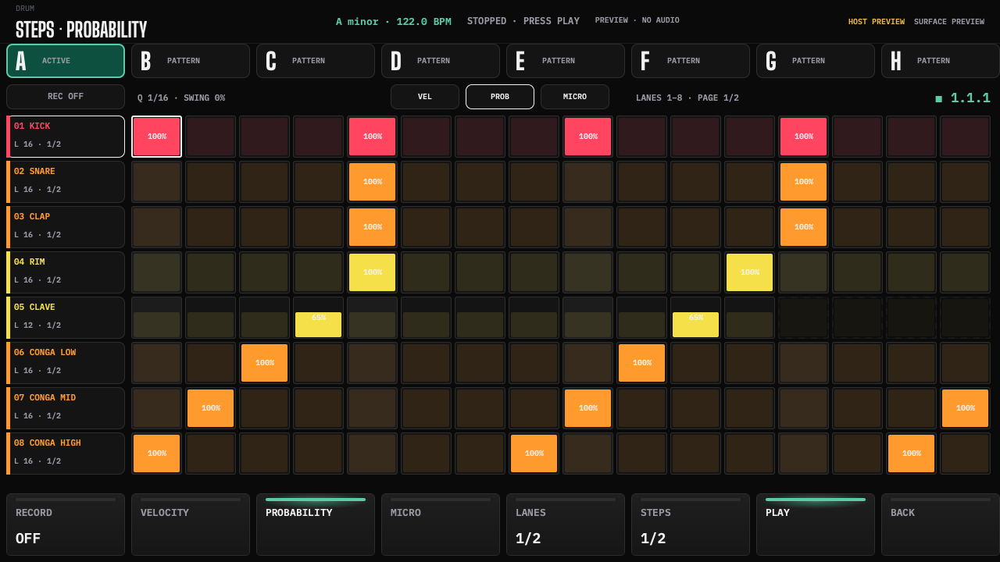
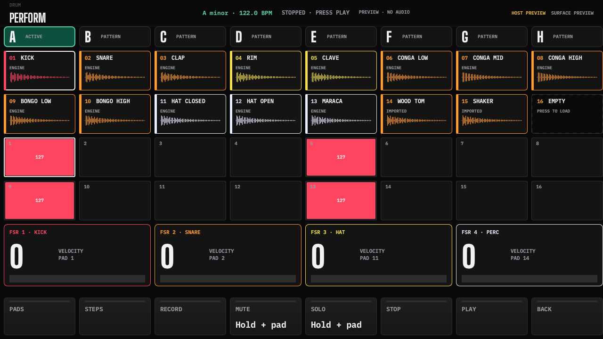
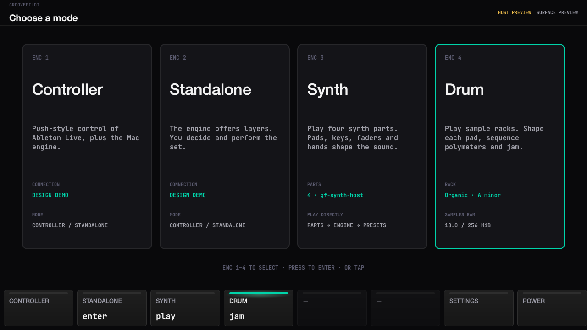

Console DRUM · designs 46–55
Deterministic preview. No audio or hardware certification. Manifest
46 · DrumRack
46b · DrumRackStates 46c · DrumRackEmpty
46c · DrumRackEmpty
47 · DrumPad
48 · DrumBrowser 48b · DrumBrowserEmpty
48b · DrumBrowserEmpty
49 · DrumImport
50 · DrumSteps 50b · DrumProbability
50b · DrumProbability
51 · DrumPerform
52 · DrumMixer 53 · DrumSave
53 · DrumSave 54 · DrumVariations
54 · DrumVariations 55 · ModeSelect
55 · ModeSelect